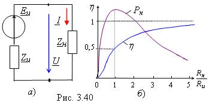

|
Рассмотрим электрическую
цепь, состоящую из источника энергии (сигнала) Eu
с внутренним сопротивлением Zu
= Ru+
jXu
и нагрузки с сопротивлением Zн
= Rн+
jXн
(рис. 3.40, а).
В общем случае ток  Чтобы получить максимальную мощность,
передаваемую в нагрузку, необходимо: Итак, для согласования источника энергии (сигнала) с нагрузкой по критерию максимума мощности, передаваемой в нагрузку, сопротивление нагрузки должно быть величиной, комплексно-сопряжённой с внутренним сопротивлением источника. При выполнении этого условия, имеем:
Такой режим работы реализуют в маломощных радиоустройствах. Промышленные же системы электроснабжения работают при отношениях Rн/Rи > 4...5 (при малых Rи), при которых КПД h ® 1. |
|||